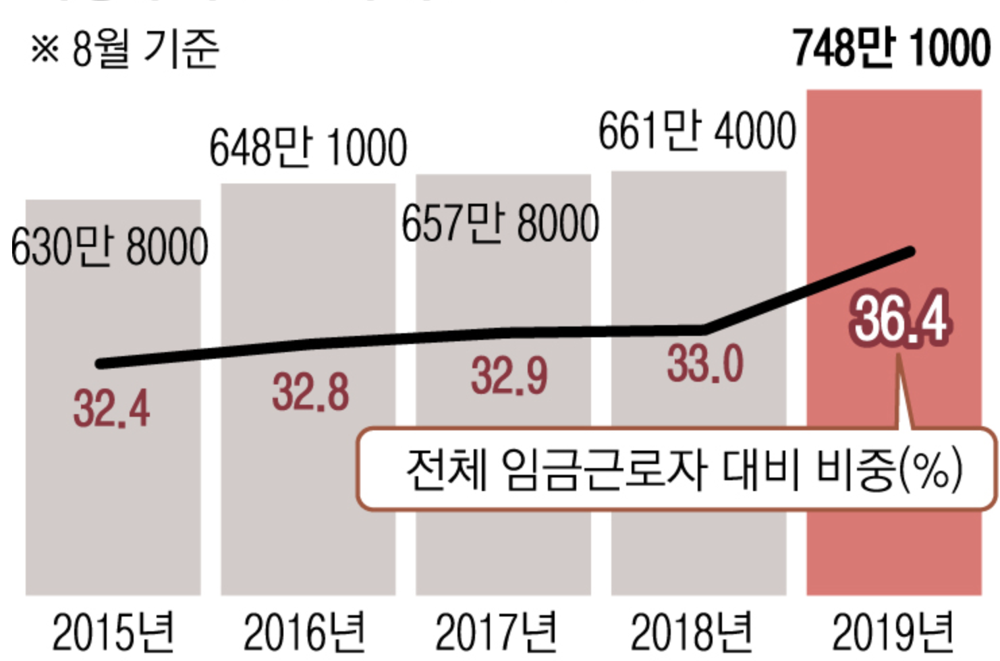
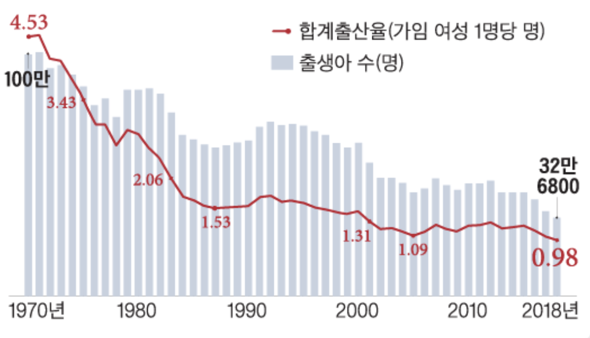
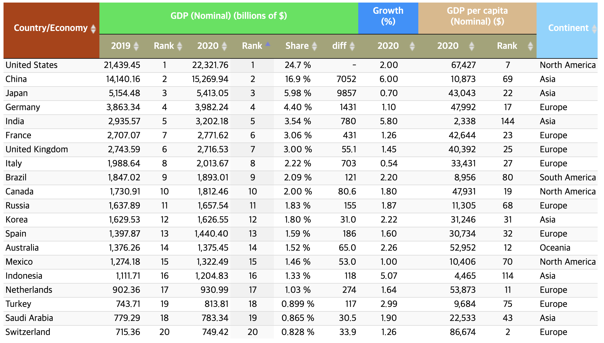

통계 지표는 현재 한국의 경제 상황을 확인 하는 것이 보다 객관적인 사고를 하는데 도움이 됩니다. 그래서 경제 상황을 이해할 수 있는 몇가지 주요 지표 들에 대해서 확인해 보도록 하겠습니다.
비정규직 비율의 증가
비정규직 근로자와 정규직 근로자 사이에는 임금 등에서 보상의 차이가 존재합니다. 비정규직 비율이 36.4%에 해당합니다. 비정규직의 발생 배경은 경제의 불확실성입니다. 경제의 불확실성으로 인해, 비정규직 비율이 높아지면 기업 관점에서 기술 축적을 방해하고, 노동자 관점에서는 고용불안을 가져다 줍니다. 요즘 코로나 상태로 인해 세계 경제가 꽁꽁 얼어 붙고, 소비가 위축되면서 경제의 불확실성이 높아진 상태입니다. 기업 입장에서 수요를 예측 할 수 없어, 생산량을 어떻게 조절이 어렵게 되었습니다. 이는 채용 시장에도 영향을 미쳐 비정규직 비율을 높이는 상황입니다.

경제 성장률을 높이려면 국가 전체의 비정규직 비율을 줄여, 기업 생산량을 높여, 수입/수출의 안정화, 환율의 안정화를 통해 기업 환경을 좋게 만드는 노력이 필요할 것 입니다.
출산율 통계
출산율은 국가 경쟁력을 유지하는데 중요한 지표입니다. 국가의 노동을 책임지는 젊은이가 많아져야 경제 생산활동이 안정적으로 이뤄져, 경제 활성화가 지속 가능하게 됩니다. 그런데 **세계은행 (2016)**에서 발표한 자료를 따르면 200개국중에 대한민국의 출산율은 200위입니다. 출산율 1.3 이하를 기록해 초저출산국가(ultra-low birth rate societies)로 분류되었습니다. 아래 내용은 통계청의 통계와 세계정부기구통계입니다.
심지어 2019년 통계에 따르면 출산율 0.98명으로 세계 유일의 출산율 0명대의 나라가 되었습니다. 사실 한국은 2006년 부터 1차~3차에 걸처 약 200조원의 출산 예산을 투자하였지만, 별다른 성과를 거두지 못했습니다.

저출산의 배경을 보면 경제적 어려움이 있습니다. 이로 인해 전형적인 가족 모델이 해제된 대에 기인합니다. 여성의 사회 진출이 많아지면서 아버지가 생계 유지자로, 어머니가 가사 담당자로 되는 구조가 무너진 것 입니다. 출산율을 높이려면 보육 서비스를 제고하고, 가족 모델이 해체 디지 않도록 전반적인 산업구조가 출산 장려와 출산 안정 지원을 위한 정책으로 전환이 되어야 할 것 입니다.
GDP 통계
GDP는 국민 총생산량(외국인의 국내 생산량 포함)으로 한 나라 안에서 새롭게 생산된 최종 생산물의 가치를 시장 가격으로 환산하여 합산한 것입니다. GDP의 증가율이 곧 경제성장률을 의미합니다. 따라서 GDP 추이를 보면 경제 규모와 경제 활성화 정도를 가늠할 수 있습니다. 보통 GDP 성장률이 높은 국가들을 보면 가나, 네팔과 같은 신흥국 들이 차지하고 있습니다. 현재 2019년 현재 한국은 러시아 다음으로 12위 권의 경제 규모임을 확인할 수 있습니다.
